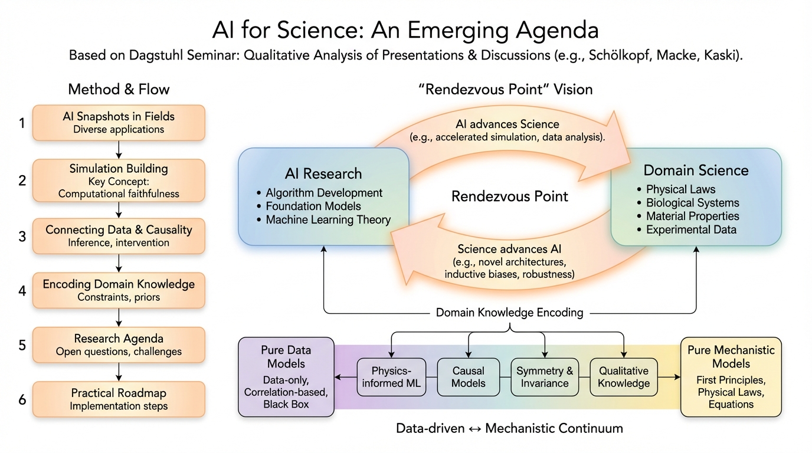

저자: Philipp Berens, Kyle Cranmer, Neil D. Lawrence, Ulrike von Luxburg, Jessica Montgomery | 날짜: 2023-03-07 | arXiv: 2303.04217

Figure 1
2022년 9월 Dagstuhl Seminar 22382 "Machine Learning for Science: Bridging Data-Driven and Mechanistic Modelling"의 논의를 종합한 로드맵 보고서이다. AI for Science 분야의 핵심 연구 주제로 (1) 시뮬레이션 및 에뮬레이션, (2) 인과 추론, (3) 도메인 지식의 AI 통합을 제시하고, 지구과학, 천체물리학, 생물학, 농업과학, 신경과학 등 다양한 분야의 구체적 적용 사례를 통해 data-driven과 mechanistic 모델링의 연속체(continuum)를 구축하는 비전을 제안한다.
총평: AI for Science 분야의 가장 포괄적이고 체계적인 로드맵 중 하나로, Berens, Cranmer, Lawrence, von Luxburg, Montgomery 등 저명한 연구자들의 통찰이 잘 종합되어 있다. Data-driven과 mechanistic 모델링의 연속체 개념, computational faithfulness, scientific centaurs 등의 프레임워크는 분야의 방향성을 잘 정립한다. 다만 2023년 초 작성 시점의 한계로 LLM 혁명 이후의 급격한 변화를 반영하지 못하며, 새로운 기술적 기여보다는 기존 논의의 종합에 가깝다. AI for Science에 관심을 갖는 연구자라면 반드시 읽어야 할 기초 문헌이다.